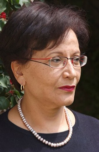

|
|
زنان تونس علیه عقب گرد بسیج می شوند
يكشنبه10 بهمن 1389
تغییر برای برابری - سهیر بلحسن ژورنالیست و فعال جنبش حقوق بشر و دمکراسی است. بلحسن از منتقدین دولت سرنگون شده ی بن علی بود. او پس از یک دوره ی پنج ساله ی تبعید در سال 1988 به تونس بازگشت و نشریه ی ادبی "7 ثور 7" را بنیان گذاشت. اما نشریه به جرم انتقاد به نبود آزادی بیان در کشور پس از یک سال توقیف شد. در سال 2007 بل حسن به سمت ریاست "سازمان جهانی لیگ حقوق بشر" برگزیده شد. او در حال حاضر معاون "لیگ حقوق بشر تونس" که قدیمی ترین سازمان حقوق بشر در جهان عرب است نیز می باشد.

نشریه ی دیدگاه فمینیستی سوئد در شماره ی هفته ی گذشته ی خود در گفتگوی تلفنی با سهیر بلحسن در تونس از او پرسید:
زنان تونس چه نقشی در تحولات اخیر تونس ایفا می کنند؟
 آنها همان نقشی را ایفا می کنند که مردان تونسی. مردم از همه ی اقشار اجتماعی و از هر سنی، در خیابان ها و یا سازمان ها و احزاب بسیج شده اند. زنان همچون هر شهروندی در مباحثی که در جامعه جاری است مشارکت می کنند.
آنها همان نقشی را ایفا می کنند که مردان تونسی. مردم از همه ی اقشار اجتماعی و از هر سنی، در خیابان ها و یا سازمان ها و احزاب بسیج شده اند. زنان همچون هر شهروندی در مباحثی که در جامعه جاری است مشارکت می کنند.
آیا سازمان های زنان سراسری و قوی برای ادامه ی مبارزات زنان وجود دارد؟
 اتحادیه ی دمکراتیک زنان تونس همواره سازمانی قوی بوده است. ولی این سازمان از جانب مقامات رژیم تحت فشار قرار داشت. حالا آنها می توانند آزادانه در مباحث شرکت کنند و نظرات شان را ترویج کنند. آنها خود را در مقابله با عقب گرد احتمالی و برای دفاع از دست آوردهایی که جنبش زنان کسب کرده سازماندهی می کنند. امروزه دیگر همه می توانند علنی کار کنند.
اتحادیه ی دمکراتیک زنان تونس همواره سازمانی قوی بوده است. ولی این سازمان از جانب مقامات رژیم تحت فشار قرار داشت. حالا آنها می توانند آزادانه در مباحث شرکت کنند و نظرات شان را ترویج کنند. آنها خود را در مقابله با عقب گرد احتمالی و برای دفاع از دست آوردهایی که جنبش زنان کسب کرده سازماندهی می کنند. امروزه دیگر همه می توانند علنی کار کنند.
به نظر شما آیا نیروهای ارتجاعی که می خواهند حقوق زنان را محدود کنند قوی هستند؟
 آنها وجود دارند. ما به هر حال یک کشور عربی مسلمان هستیم. نیروهای هستند که از اسلام استفاده ی سیاسی می کنند و می خواهند که دست آوردهای تونس را باز پس بگیرند. ولی آنها به هیچ وجه در اکثریت نیستند. در تظاهرات ها هم ما شاهد بودیم که جوانان برای حق کار به پا خواستند و نه چیز دیگری.
آنها وجود دارند. ما به هر حال یک کشور عربی مسلمان هستیم. نیروهای هستند که از اسلام استفاده ی سیاسی می کنند و می خواهند که دست آوردهای تونس را باز پس بگیرند. ولی آنها به هیچ وجه در اکثریت نیستند. در تظاهرات ها هم ما شاهد بودیم که جوانان برای حق کار به پا خواستند و نه چیز دیگری.
شما روند تحولات تونس را به چه سمتی ارزیابی می کنید؟
 هنوز وضعیت نامعلوم است. ما دولت انتقالی و انتخابات را در پیش داریم... پروسه خیلی پیچیده است. به زودی خواهیم دید که چه پیش می آید.
هنوز وضعیت نامعلوم است. ما دولت انتقالی و انتخابات را در پیش داریم... پروسه خیلی پیچیده است. به زودی خواهیم دید که چه پیش می آید.
http://en.wikipedia.org/wiki/Souhayr_Belhassen
منبع: http://feministisktperspektiv.se/2011/01/21/tunisiska-kvinnor-mobiliserar-mot-tillbakagang/